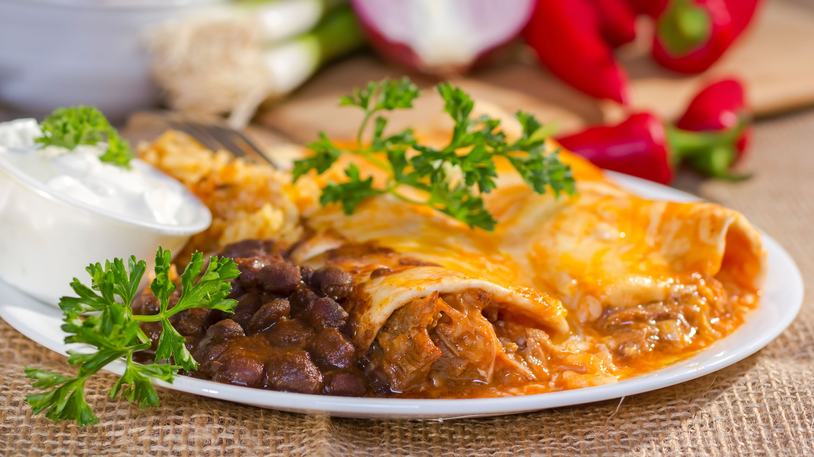
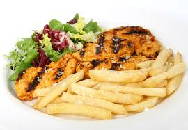
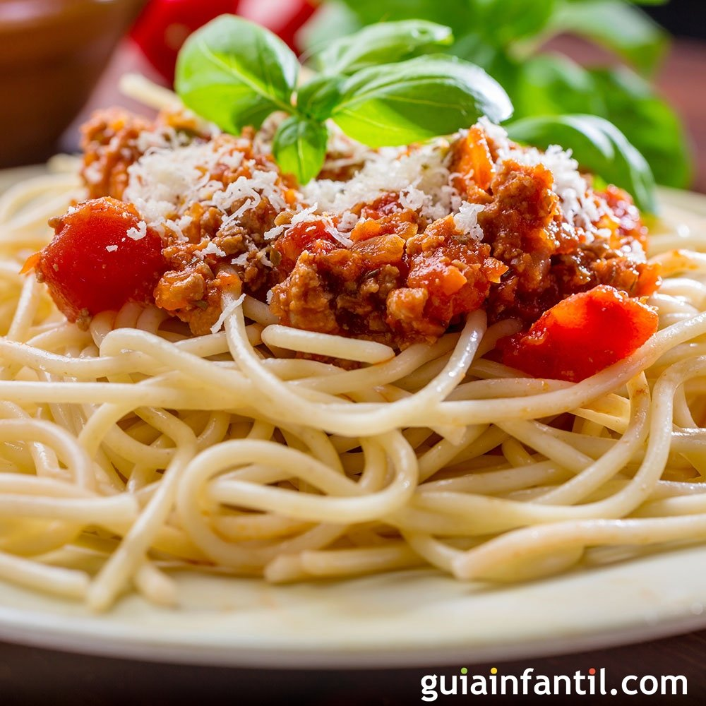
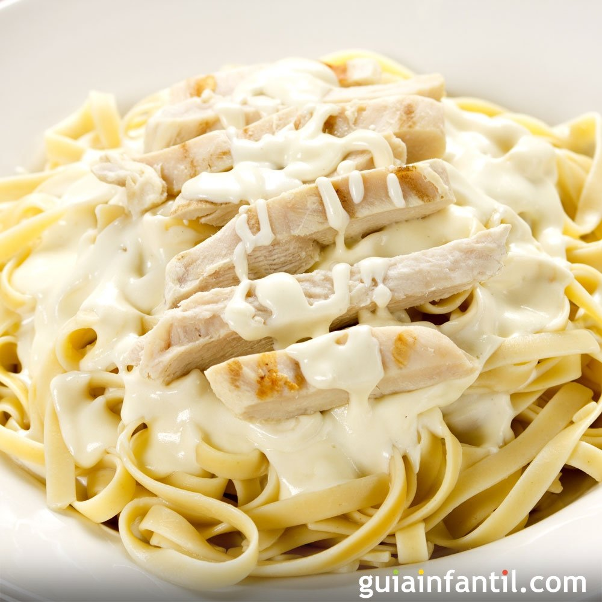

Favoritos:





Espaguetis a la boloñesa

Ingredientes:
- Poner agua a calentar a fuego fuerte en una olla grande. Cuando rompa a hervir añadir una cucharadita de sal y los espaguetis, dejar que cueza hasta que esté 'al dente', según instrucciones del paquete (unos 10 minutos).
- Lavar, perlar y picar muy finas la zanahoria, el ajo y la cebolla. También lavar y rallar los tomates en un bol aparte, y reservarlos.
- En una sartén, poner un poco de aceite a calentar a fuego medio. Echar la cebolla y el ajo, cuando la primera este transparente agregar la zanahoria y freír durante unos minutos, hasta que se dore todo.
- Agregar la carne picada, salpimentar al gusto y dejar que se haga. Agregar el tomate rallado y mezclar bien, echar un poco de orégano y bajar un poco el fuego, dejar unos minutos para que espese un poco, removiendo de vez en cuando.
- Escurrir la pasta, servir con la salsa boloñesa por encima y espolvorear un poco de queso rallado.
Pasta en salsa Alfredo con pollo. Receta italiana

Ingredientes:
- El primer paso será preparar la pasta. Para ello, se debe cocinarla en abundante agua caliente con sal, hasta que esté ‘al dente’. Reservar.
- En una sartén, rehogar la cebolla finamente picada con la mantequilla. Cuando esté hecha, añadir la crema de leche junto con el queso rallado. Remover con cuchara de madera hasta que empiece a espesarse.
- Agregar la sal, la pimienta y la nuez moscada. Reservar.
- Salpimentar las pechugas de pollo y freírlas en aceite a la plancha hasta que estén doradas.
- Verter la salsa Alfredo sobre la pasta, y luego disponer una pechuga de pollo por encima.